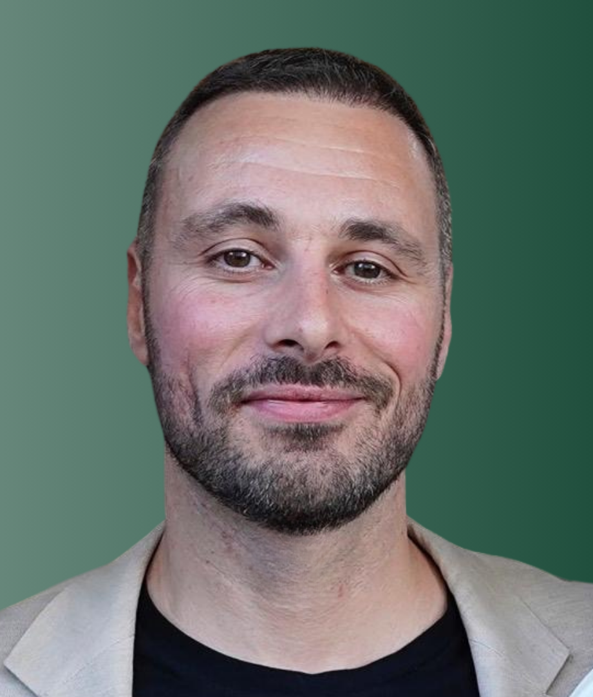

Oficios Circulares nace como una iniciativa para acompañar a proyectos con propósito a ganar claridad, impacto y sostenibilidad. No desde fórmulas vacías, sino desde la escucha, la estrategia y la conexión real con lo que les hace únicos.
Qué hacemos
Qué somos
Una consultora estratégica independiente. Trabajamos con marcas, iniciativas y personas comprometidas con su entorno, que quieren construir desde el propósito y la sostenibilidad. Ofrecemos acompañamiento personalizado para que cada proyecto purifique, ordene y haga crecer tu proyecto sin perder tu esencia.
Nuestra forma de trabajar
No creemos en las soluciones estándar. Preferimos hacer preguntas difíciles, pensar contigo y diseñar caminos a medida. Cada proyecto es distinto, pero eso adaptamos nuestro enfoque, aunque siempre seguimos aplicando nuestra misma metodología: el Círculo de Valor 3D.
Nuestra metodología: Círculo de Valor 3D
Trabajamos en tres fases complementarias: Diagnosticar, Diseñar y Difundir. Primero entendemos la realidad. Luego creamos estrategias circulares. Finalmente, te ayudamos a contar ese nuevo valor con claridad y honestidad.
1
Diagnosticar
Entender la Realidad. Lo primero que hago siempre es una fase de Diagnóstico. No aplico soluciones genéricas. Me sumerjo para entender a fondo el proyecto: analizo los materiales que se usan, desde su origen hasta su fin de vida; estudio los procesos para identificar puntos de mejora en colaboración con el cliente; y comprendo la comunicación actual de la marca.
2
Diseñar
Crear la Estrategia Circular. Una vez que tenemos el mapa de la situación, entramos en la fase de Diseño. Aquí es donde co-creamos soluciones a medida para hacer el proyecto más circular. Esto puede incluir desde aplicar estrategias de Diseño de Producto (para que duren más o se reparen mejor) hasta idear nuevos Modelos de Negocio (como sistemas de retorno o servicios de reparación) que generen nuevos ingresos.
3
Difundir
Contar la Nueva Historia. Y finalmente, la fase de Difusión. De nada sirve ser circular si nadie lo sabe o no se entiende. En esta última fase, transformamos todas esas mejoras operativas en un relato potente y honesto y en una estrategia de marketing y branding que realmente conecte con el cliente, comunique el valor y diferencie a la marca sin caer nunca en el greenwashing.
Sobre mí
Soy José Moscardó, fundador de Oficios Circulares. Llevo más de diez años trabajando en estrategia, marketing y sostenibilidad, tanto en grandes empresas como en proyectos personales. Después de años trabajando en proyectos relacionados con el desarrollo personal, el bienestar emocional y la sostenibilidad, sentí que necesitaba dar un paso más. Quería enfocar mi carrera en algo con más sentido, algo propio, que integrara todas esas experiencias y aprendizajes acumulados.
Oficios Circulares nació como una forma de poner en valor todo lo que he aprendido y de acompañar a quienes están construyendo algo con propósito, desde la autenticidad y con ganas de hacer las cosas bien. Proyectos que mezclan lo humano con lo estratégico. Lo artesanal con lo innovador.
Poco a poco, fui dándole forma a esta idea: una consultora centrada en proyectos con alma, comprometidos con su entorno y con ganas de hacer las cosas bien. Proyectos que mezclan lo humano con lo estratégico. Lo artesanal con lo innovador.
Así nació Oficios Circulares. Como una forma de poner en valor todo lo que he aprendido, y de acompañar a quienes están construyendo algo con propósito, desde la autenticidad y con ganas de dejar huella.

Lo que nos mueve
Creemos en el poder de las buenas preguntas, en la estrategia con alma y en los proyectos que van más allá del beneficio económico. Nos mueve la claridad, la conexión humana y los proyectos que no necesitan parecer lo que no son. Nos mueve que hacer las cosas bien no sea un lujo, sino una forma natural de trabajar.
"Creemos en un futuro donde la creación con propósito sea pilar de una nueva economía: más conectada con el territorio, las personas y el planeta."
¿Listo para hacer crecer tu proyecto con propósito?
Conversemos sobre cómo podemos ayudarte a clarificar tu estrategia, fortalecer tu impacto y contar tu historia de manera auténtica.